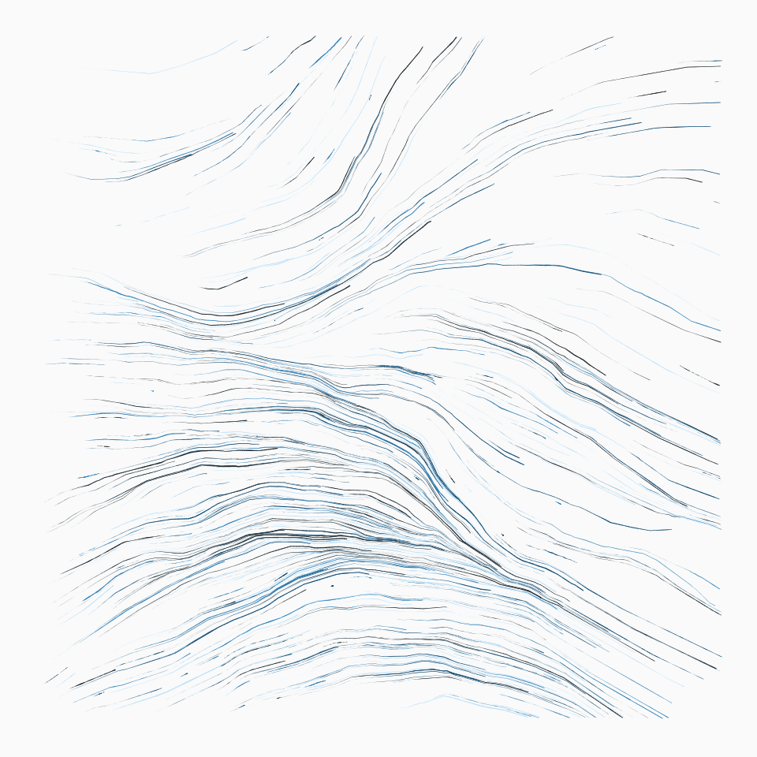
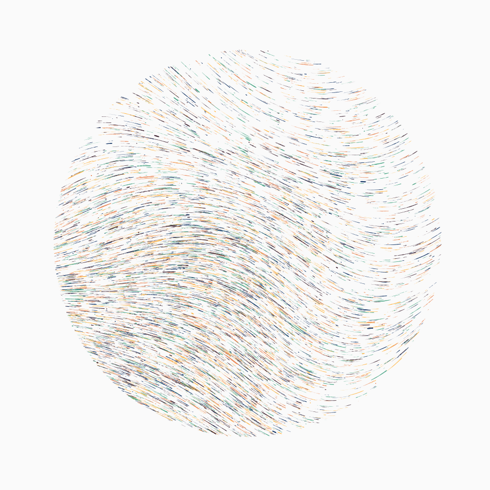
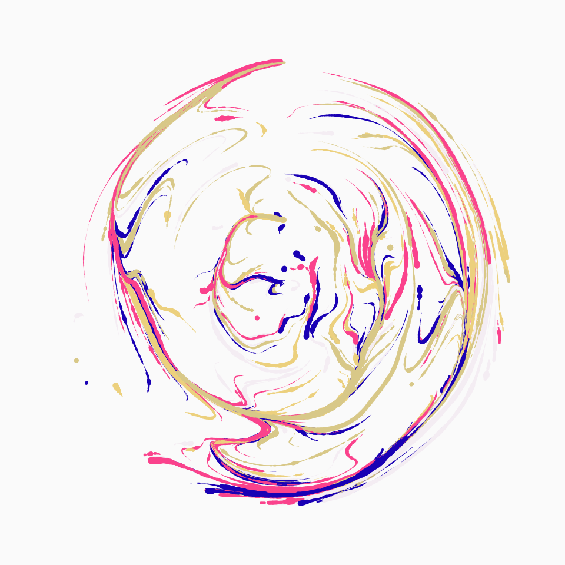
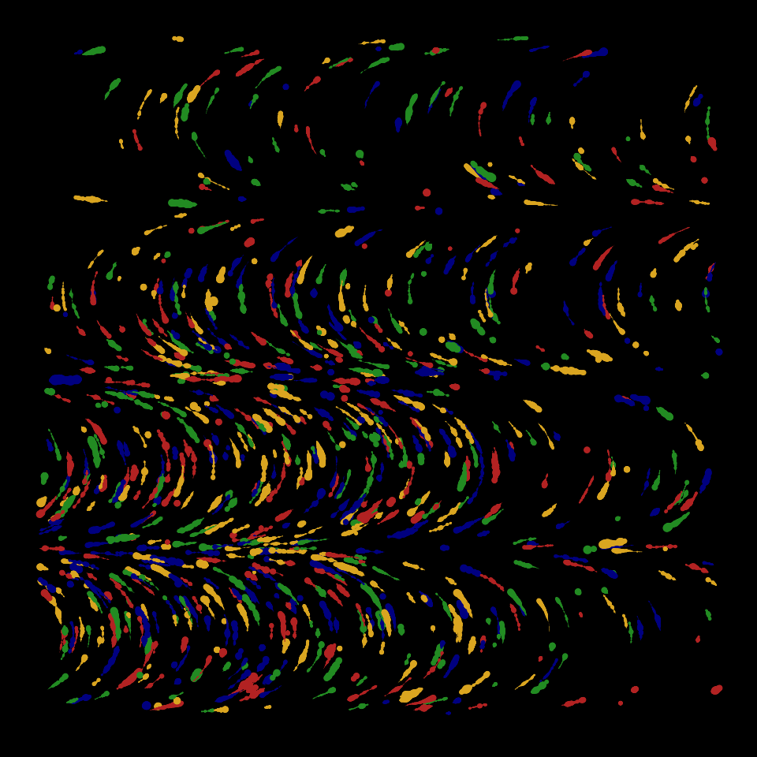

This function draws flow fields on a canvas. The algorithm simulates the flow of points through a field of angles which can be set manually or generated from the predictions of a supervised learning method (i.e., knn, svm, random forest) trained on randomly generated data.
canvas_flow(
colors,
background = "#fafafa",
lines = 500,
lwd = 0.05,
iterations = 100,
stepmax = 0.01,
outline = c("none", "circle", "square"),
polar = FALSE,
angles = NULL
)a string or character vector specifying the color(s) used for the artwork.
a character specifying the color used for the background.
the number of lines to draw.
expansion factor for the line width.
the maximum number of iterations for each line.
the maximum proportion of the canvas covered in each iteration.
character. Which outline to use for the artwork. Possible options are none (default), circle or square.
logical. Whether to draw the flow field with polar coordinates.
optional, a 200 x 200 matrix containing the angles in the flow field, or a character indicating the type of noise to use (svm, knn, rf, perlin, cubic, simplex, or worley). If NULL (the default), the noise type is chosen randomly.
A ggplot object containing the artwork.
colorPalette
# \donttest{
set.seed(1)
# Simple example
canvas_flow(colors = colorPalette("dark2"))

# Outline example
canvas_flow(
colors = colorPalette("vrolik1"), lines = 10000,
outline = "circle", iterations = 10, angles = "svm"
)

# Polar example
canvas_flow(
colors = colorPalette("vrolik2"), lines = 300,
lwd = 0.5, polar = TRUE
)

# Advanced example
angles <- matrix(0, 200, 200)
angles[1:100, ] <- seq(from = 0, to = 2 * pi, length = 100)
angles[101:200, ] <- seq(from = 2 * pi, to = 0, length = 100)
angles <- angles + rnorm(200 * 200, sd = 0.1)
canvas_flow(
colors = colorPalette("tuscany1"), background = "black",
angles = angles, lwd = 0.4, lines = 1000, stepmax = 0.001
)

# }